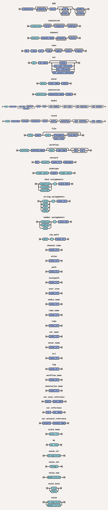

DSL
Synopsis
DSL Tools.
$ dse-parse2ast [args]
Commands
dse-parse2ast
Convert a DSE file into an intermediate JSON representation.
$ dse-parse2ast <dse_file_path> <json_output_file_path>
Keywords
simulation
Defines the simulation setup including architecture, stepsize, and endtime.
simulation arch=linux-amd64 stepsize=0.0005 endtime=0.005
arch
Specifies the architecture in simulation or stack or model level (default : linux-amd64 ).
simulation arch=linux-amd64
stepsize
Time increment for each simulation step (default : 0.0005).
simulation stepsize=0.0005
endtime
Total simulation duration step (default : 0.005).
simulation endtime=0.005
channel
Declares a communication channel.
channel physical
network
The network keyword is used in two related but distinct contexts:
Defining a network interface
At the channel level, network declares a named network interface and its MIME type.
network CAN 'application/x-automotive-bus;interface=stream;type=frame;bus=can;schema=fbs;bus_id=1'
- CAN is the network or signal name
- The string value is the network MIME type
Referencing a network from model variables
At the model level, the network keyword can also be used as a reference type inside var declarations. This allows to apply templating to the MIME type using variables. The mimetype or signal keyword after the network/signal name in network reference determines which property of the network is assigned to the variable
simulation
channel binary_channel
network can 'application/x-automotive-bus;interface=stream;type=frame;bus=can;schema=fbs;bus_id={{BUS_ID}};interface_id={{INTERFACE_ID}}'
model network_can Network_CAN uid=42
channel binary_channel binary
var BUS_ID 1
var INTERFACE_ID 3
var MIMETYPE network can mimetype
var SIGNAL network can signal
uses
Imports external dependencies such as modules, FMUs, files or Lua models.
The uses keyword supports both remote and local references.
Remote references
Dependencies can be fetched from external sources such as GitHub or artifact repositories.
Authentication (e.g., using a personal access token) may be required.
uses
dse.fmi https://github.com/boschglobal/dse.fmi v1.1.34
example https://github.boschdevcloud.com/fsil/fsil.runnable/releases/download/v1.1.2/example.zip token={{.GHE_PAT}}
Local references
Dependencies can also be referenced directly from the local filesystem. Both absolute and relative paths are supported.
uses example1 /home/users/example.zip example2 example.zip
Lua model references
Lua-based models can be referenced using the file:// URI scheme (absolute path).
A reference may point directly to a Lua file or to an archive (.zip) containing one or more Lua models.
uses
Csv file:///{{.PWD}}/csv.lua
Linear file:///{{.PWD}}/models.zip path=linear/linear.lua
...
model csv Csv
...
model linear Linear
...
var
Declares variables, which may refer to other resources or contain static values.
model runnable fsil.runnable uid=5
channel signal signal_channel
channel network network_channel
workflow unpack-runnable-target
var ROOT_DIR {{.OUTDIR}}
var ZIP uses example
var DIR {{.SIMDIR}}/{{.PATH}}
model
Defines a component in the simulation, such as an FMU or a gateway.
model runnable fsil.runnable channel signal signal_channel channel network network_channel
uid
Assigns a unique ID to a model.
model runnable fsil.runnable uid=5 channel signal signal_channel channel network network_channel
envar
Declares an environment variable used at model or stack scope.
model runnable fsil.runnable uid=5 channel signal signal_channel channel network network_channel envar SIMBUS_LOGLEVEL 3
workflow
Defines a processing or generation step applied to a model or stack.
model runnable fsil.runnable uid=5
channel signal signal_channel
channel network network_channel
workflow unpack-runnable-target
var ROOT_DIR {{.OUTDIR}}
var ZIP uses example
var DIR {{.SIMDIR}}/{{.PATH}}
stack
Declares a group of models composed together for simulation.
stack fmu-stack
model FMU_S1 dse.fmi.mcl
channel physical scalar_vector
workflow generate-fmimcl
var FMU_DIR uses fmu_s1
var MCL_PATH some/path
var OUT_DIR {{.model.name}}
model FMU_S2 dse.fmi.mcl
channel physical scalar_vector
workflow generate-fmimcl
var FMU_DIR uses fmu_s2
var MCL_PATH some/path
var OUT_DIR {{.model.name}}
stacked
A boolean flag that indicates if the models in a stack should be layered.
stack fmu-stack stacked=true arch=linux-x86
model FMU_S1 dse.fmi.mcl
channel physical scalar_vector
workflow generate-fmimcl
var FMU_DIR uses fmu_s1
var MCL_PATH some/path
var OUT_DIR {{.model.name}}
model FMU_S2 dse.fmi.mcl
channel physical scalar_vector
workflow generate-fmimcl
var FMU_DIR uses fmu_s2
var MCL_PATH some/path
var OUT_DIR {{.model.name}}
sequential
A boolean flag for stacks that ensures models are executed one after another, in a defined order.
stack fmu-stack stacked=true sequential=true arch=linux-x86
model FMU_S1 dse.fmi.mcl
channel physical scalar_vector
workflow generate-fmimcl
var FMU_DIR uses fmu_s1
var MCL_PATH some/path
var OUT_DIR {{.model.name}}
model FMU_S2 dse.fmi.mcl
channel physical scalar_vector
workflow generate-fmimcl
var FMU_DIR uses fmu_s2
var MCL_PATH some/path
var OUT_DIR {{.model.name}}
file
Maps or includes external input/configuration files in the simulation.
model FMU dse.fmi.mcl uid=42
channel physical scalar_vector
file input.csv uses input_file
file data/signalgroup.yaml sample/data/signalgroup.yaml
workflow generate-fmimcl
var FMU_DIR uses fmu_2
var MCL_PATH some/path
var OUT_DIR {{.model.name}}
Example DSL File
openloop.dse
simulation arch=linux-amd64
channel physical
uses
dse.modelc https://github.com/boschglobal/dse.modelc v2.1.23
dse.fmi https://github.com/boschglobal/dse.fmi v1.1.23
linear_fmu https://github.com/boschglobal/dse.fmi/releases/download/v1.1.23/Fmi-1.1.23-linux-amd64.zip path=examples/fmu/linear/fmi2/linear.fmu
model input dse.modelc.csv
channel physical signal_channel
envar CSV_FILE model/input/data/input.csv
file input.csv input/openloop.csv
file signalgroup.yaml input/signalgroup.yaml
model linear dse.fmi.mcl
channel physical signal_channel
envar MEASUREMENT_FILE /sim/measurement.mf4
workflow generate-fmimcl
var FMU_DIR uses linear_fmu
var OUT_DIR {{.PATH}}/data
var MCL_PATH {{.PATH}}/lib/libfmimcl.so
Syntax Diagram
